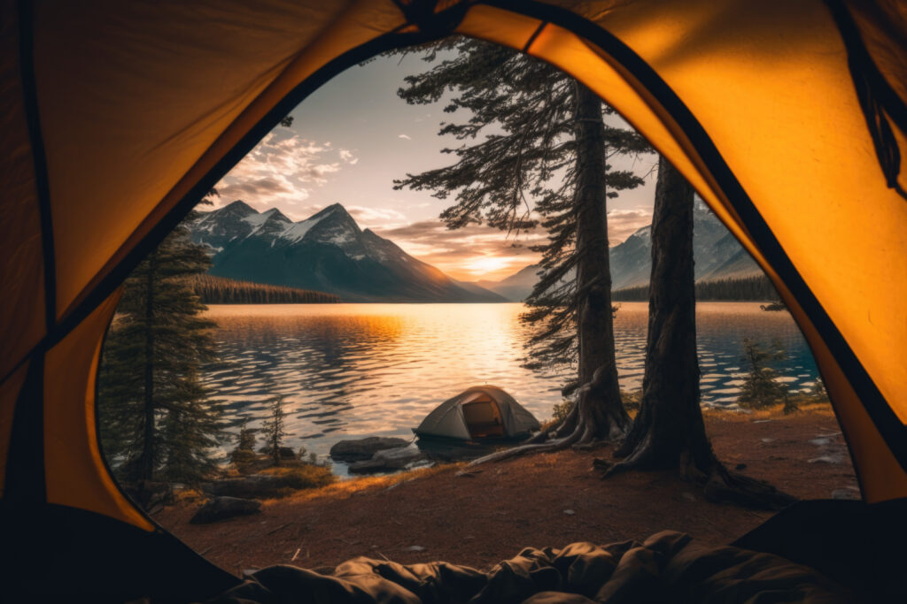

Summer is the perfect time for swimming adventures! Whether you head to a nearby lake, beach, or pool, diving into cool waters is a refreshing escape from the heat. Feel the sun on your skin as you glide through crystal-clear pools or ride waves at the shore. Swimming isn't just about exercise; it's a joyful way to relax, play, and connect with friends and family. Grab your swimsuit, sunscreen, and goggles, and get ready to make a splash this summer!

Another fantastic summer activity to consider is hiking. Exploring nature trails during the summer months allows you to immerse yourself in scenic landscapes and discover hidden gems in your area. Whether you prefer gentle paths through lush forests or challenging climbs up rocky terrain, hiking offers a chance to disconnect from technology and reconnect with the great outdoors. Don't forget to pack water, snacks, and appropriate footwear, and enjoy the sights, sounds, and serenity of nature along the way.

How about camping? Camping in the summer is a wonderful way to escape the hustle and bustle of daily life and immerse yourself in nature. Whether you prefer pitching a tent in a campground or venturing into the backcountry for a more remote experience, camping offers a chance to unwind and appreciate the beauty of the outdoors. Gather around a campfire, roast marshmallows, stargaze under the clear night sky, and wake up to the sounds of birds chirping in the morning. It's a great opportunity to disconnect from screens and reconnect with nature and loved ones.
